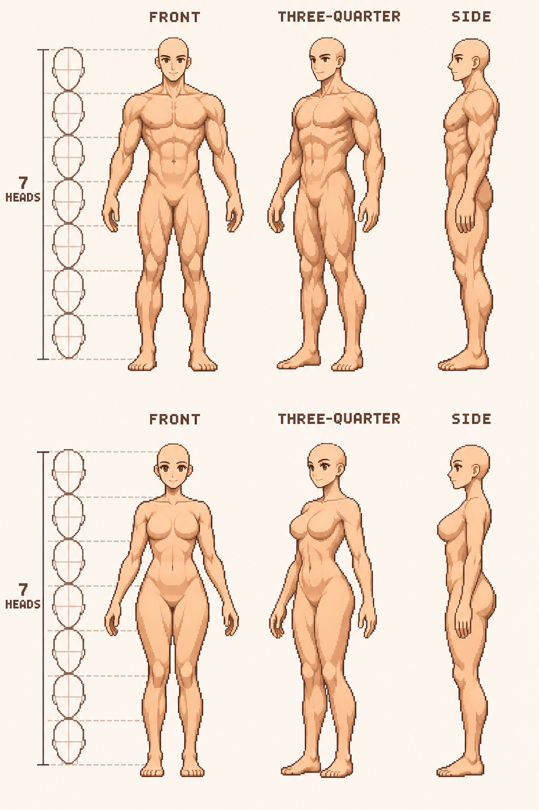

인체 승인 전 연구입니다. 기본 참고 그림은 AI로 생성한 수정 대상 시안입니다. 해부학적 정답도, 회전 가능한 게임 모델도 아닙니다. 그림에 적힌 등신과 실제 측정값이 다를 수 있습니다. 자동 점수는 완성도를 판정하지 않습니다.
참고 그림과 기준점
아래 원본을 눌러 기준점을 바꿀 수 있습니다. 머리끝을 누르면 가로 중심도 함께 옮깁니다. 파일은 이 브라우저 안에서만 사용하며 업로드하지 않습니다.

이번 대조에서 확인할 것
- 머리·어깨·흉곽·골반의 너비와 손목·사타구니·무릎의 높이를 먼저 맞춥니다.
- 어깨의 공 모양, 전완의 대칭 팽창, 무릎에서 종아리로 꺾이는 연결을 봅니다.
- 가슴의 윗면이 흉곽에서 자연스럽게 이어지는지, 옆면에서 무게와 아래 볼륨이 읽히는지 봅니다.
- 5~8등신은 큰 명암 덩어리가 인체를 설명해야 합니다. 2~4등신은 큰 머리·둥근 턱·단순한 몸이 하나의 실루엣으로 읽혀야 합니다.
일본 자료와 이미지 관찰 기록 · MediBang 등신 도판 · Palmie 데포르메 강의 · CLIP STUDIO 인체 데생